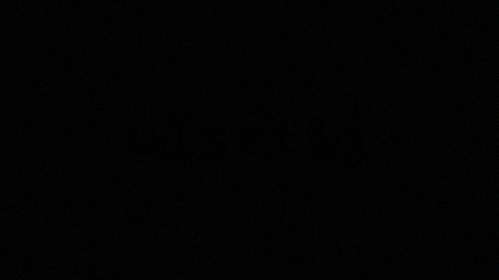

Feed partially corrupted. Optical data shows no readable subject. Possible phase interference with municipal sensors.
> Attempting light-level reconstruction...
> Reconstruction failed: insufficient visible data.
[Technician Note] “Sometimes what you can’t see under normal light tells the real story. Try alternate visual ranges.”